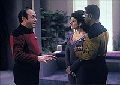
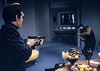
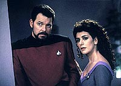
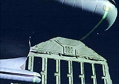
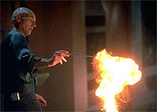

|
MANCHETE
DO EPISDIO
O
intelectual Picard tem a chance de
bancar um legtimo heri de ao
Episdio
anterior | Prximo
episdio
Sinopse:
Data Estelar: 46682.4.
A Enterprise, atracada estao orbital Remmler, evacuada
para a realizao de uma limpeza de brions, um procedimento que
varre a nave com raios mortais para eliminar partculas acumuladas
que foram coletadas pela nave durante os anos de vo espacial. La
Forge informa a Picard que, porque os nveis de partculas barinicas
da nave esto to altos, uma varredura ainda mais intensa do que o
normal pode ser necessria para eliminar a radiao. Para isso,
La Forge encomendou desviadores de campo extras para a ponte e o ncleo
do computador, a fim de proteger essas reas mais sensveis.
 Os oficiais
seniores, exceo de Worf, que conseguiu licena para no
comparecer, vo recepo promovida na base Arkariana no
planeta abaixo, promovida pelo comandante Hutchinson. Descobrindo
que era possvel cavalgar em Arkaria, Picard encontra a perfeita
desculpa para deixar o evento, sob o pretexto de ir buscar sua sela
na nave. Apenas minutos antes do incio da varredura, ele volta
Enterprise.
O capito j est correndo para deixar a nave, quando nota que um
dos tcnicos que veio a bordo para os ltimos preparativos antes
da varredura ainda est l, trabalhando em um painel em um
corredor. Desconfiado da presena de Picard, o tcnico se prepara
para atacar, mas o capito antecipa seu movimento e o rende
inconsciente. Picard corre at a sala de transporte, mas tarde
demais: a energia da nave cortada e ele no consegue se
teleportar para o planeta.
Picard volta a encontrar o tcnico que havia derrubado e o arrasta
at a enfermaria. L ele o desperta, e o capito ordena que ele
revele seu propsito real a bordo. O homem se recusa a falar, e
Picard decide novamente deix-lo inconsciente e roubar seu
comunicador. Mas ele acaba sendo capturado na sequncia, por outra
suposta tcnica de sistemas, Kiros.
Enquanto isso, na recepo, o administrador da estao, sr.
Orton, acaba tomando todos como refns. Antes que algum pudesse
reagir, ele atira com um feiser em Geordi, que fica ferido, e no
comandante Hutchinson, que acaba morto. Os oficiais so mantidos
presos, mas no h nenhuma exigncia por parte dos sequestradores.
Os oficiais comeam a planejar um meio de escapar, usando o visor
de Geordi para emitir um pulso hipersnico, que deixaria todos
menos Data inconscientes.
Picard levado engenharia, onde os invasores esto
trabalhando. Um deles, Satler, posto para vigi-lo, mas no
presta ateno suficiente no capito. Ele consegue sabotar a
engenharia e causar uma sobrecarga, alm de fundir os desviadores
de campo que protegeriam os tcnicos da varredura. Enquanto a
engenharia evacuada, Picard foge por um tubo Jefferies. Ele acaba
sendo seguido por Satler, mas o tcnico acaba sendo pego pela
varredura e morre.
 Picard
escapa e contata Kelsey, a lder do grupo, avisando sobre os
perigos de fazer o que eles pretendem --transportar a resina de triltio
da engenharia ao bar panormico, onde pretendem escapar da
varredura pelo maior tempo possvel. Kelsey, despreocupada, faz com
que seu assistente, Neil, modifique o continer para fazer a
viagem.
Enquanto isso, Picard se arma com um arco e flechas e ento vai
enfermaria, para preparar as setas com um anestsico. Ele tambm
encontra duas substncias que ele pode combinar para produzir
pequenas exploses. Ele acerta um dos ladres, Pomet, com uma
flecha em sua perna, mas capturado novamente por Kiros. Kelsey, j
quase no bar panormico, mata Neil, por ele j no ser mais til
a ela. Encontrando Kiros, as duas levam Picard com elas para o bar
panormico.
Na base de Arkria, Riker ordena que o plano siga em frente, e logo
todos, exceo de Data, esto inconscientes. Enquanto isso,
Picard revela sua verdadeira identidade e se oferece como refm em
troca da resina de triltio, mas Kelsey recusa a oferta, porque
pretende vender a substncia em vez de us-la ela mesma para fins
terroristas. Andando pelo bar panormico, Kiros pisa em duas faixas
com os explosivos de Picard, que criam uma distrao que o ajuda a
desabilit-la. Picard e Kelsey lutam pela resina de triltio.
Durante o combate, a varredura j surge pela parede do bar panormico
--o tempo est acabando. Kelsey pega o continer e transportada
para uma nave espera, deixando Picard encontrar seu destino na
Enterprise. Desesperado, o capito tenta contatar a base, pedindo
que algum desative a varredura de brions. Com poucos segundos, o
processo interrompido. Data, que recuperou controle da base de
Arkria, respondeu ao chamado do capito. Logo depois, a nave de
Kelsey explode, uma vez que Picard conseguiu arrancar o pino de
segurana do continer de triltio durante a luta.
Comentrios:
"Starship
Mine" um bem-vindo segmento de ao voltado para o
capito Picard. Parece uma idia interessante deix-lo como o ltimo
homem bordo, tendo de lidar com invasores criminosos, e o
conceito executado a contento.
 essencialmente
uma aventura. No h grandes reflexes, algo para discutir aps
o episdio ou mesmo algum reflexo na continuidade da srie.
Trata-se apenas de uma oportunidade para o capito mostrar o quanto
ele capaz de defender sua nave sozinho, sem toda a estrutura
tecnolgica que a envolve. Nesse sentido, a varredura de brions
se torna um elemento fundamental, no s para esvaziar a nave, mas
tambm para adicionar o risco e o fator "corrida contra o
tempo" ao episdio.
uma virtude do segmento obter todas essas implicaes a partir
de uma premissa simples e razovel --a manuteno exigida pela
Enterprise. Voyager tentou fazer algo semelhante com o episdio
"Macrocosm",
deixando para Janeway a tarefa de "limpar a nave" de
invasores (no caso, micrbios gigantes), mas fracassou
terrivelmente, entre outros motivos, pela falta de simplicidade na
hora de livrar a capit do resto da tripulao para deix-la
fazer o trabalho.
Algumas coisas, entretanto, incomodam. Numa nave daquele tamanho, e
com o conhecimento que Picard deveria ter, ser capturado duas vezes
um pouco demais. Alm disso, se fosse possvel contatar a estao
(como ele faz ao final do episdio), ele deveria ter tentado fazer
isso antes, logo que a crise se instaurou (tudo bem, de nada teria
resolvido, uma vez que a estao na superfcie estaria sob
comando dos terroristas, mas ele deveria ter tentado).
 De resto,
legal ver o capito correndo em trajes civis e arquitetando um
plano elaborado para conter os criminosos. A antecipao da ao
no bar panormico com a criao e a instalao dos explosivos
(que lembraram um pouco, e, veja bem, eu disse "um pouco",
a estratgia de Kirk no clssico "Arena", da Srie
Clssica, em que o capito produz plvora a partir de minrios
distribudos na rida superfcie de um planeta) e o uso de um
arco e flecha convencional para imobilizar os inimigos foram pontos
bem utilizados.
Sendo um segmento de ao, apesar de ter aparecido um bocado
durante o episdio, Patrick Stewart no precisou fazer mais que o
feijo com arroz em sua interpretao. Quem se destaca pela boa
atuao Brent Spiner. As cenas em que Data tenta emular o
comportamento de Hutchinson para aprender as tcnicas de produzir
"conversa fiada" so engraadssimas, embora a piada
seja utilizada um pouco mais do que deveria.
Alis, todos os trechos que envolvem a recepo de Hutchinson e a
posterior situao com os refns so lentos demais, tendo mais
espao do que deveriam. inconcebvel que a tripulao snior
da Enterprise, que conta inclusive com um andride superforte, seja
mantida refm de aliengenas to descuidados como aqueles dois
Arkarianos, que deixavam qualquer um de seus cativos se aproximar a
qualquer momento.
A "distrao" de Riker lembrou um pouco os mtodos de
"negociao" de Kirk, inclusive pecando pela mesma tpica
convenincia de roteiro. No h qualquer razo para que o
Arkariano aceitasse ouvir o que Riker tinha a dizer. Se a histria
fosse um pouco mais realista (ou o criminoso mais esperto), Riker
nem teria conseguido chegar perto o suficiente para esmurrar o aliengena.
 Esses exageros de
tempo nessa subtrama provavelmente so decorrentes da necessidade
de preencher os 45 minutos do episdio sem entendiar o
telespectador com inmeras cenas de "Picard e seus inimigos
engatinhando dentro de tubos Jefferies". Mas sem dvida alguma
coisa poderia ser feita para melhorar o enredo na base Arkariana sem
simplesmente esticar as cenas. Worf, por exemplo, acabou dispensado
da recepo, mas poderia aparecer depois, por alguma razo, e
salvar o dia. Em vez disso, ele simplesmente desaparece do episdio.
Melhor uso poderia ter sido feito dele e de sua ausncia durante a
recepo.
Apesar desses problemas, "Starship Mine" um episdio
divertido e que facilmente convence o telespectador a ir at o
final. Se no pelo enredo em si, pelas bonitas tomadas da
Enterprise sofrendo a varredura de brions. E no sempre que
temos Patrick Stewart e seu Picard dando uma de Bruce Willis...
Citaes:
Worf - "And, captain, request
permission to be excused from commander Hutchinson's reception."
("E, capito, peo permisso para ser dispensado da recepo
do comandante Hutchinson.")
Picard - "Permission granted. I wish I could excuse myself
as well."
("Permisso concedida. Eu queria poder dispensar a mim mesmo
tambm.")
Geordi - "Captain, permission to..."
("Capito, permisso para...")
Picard - "Mister La Forge! I cannot excuse my whole senior
staff! Mr. Worf beat you to it."
("Senhor La Forge! Eu no posso dispensar toda a tripulao
snior! O sr. Worf pediu primeiro.")
Trivia:
 Como j havia feito em "Pen Pals" (segunda
temporada) e "The Loss"
(quarta temporada), Picard aqui manifesta seu interesse por cavalos.
A prxima vez em que ele ir tocar nesse assunto ser no filme
para cinema "Jornada nas Estrelas: Generations",
quando cavalga ao lado de James T. Kirk.
Como j havia feito em "Pen Pals" (segunda
temporada) e "The Loss"
(quarta temporada), Picard aqui manifesta seu interesse por cavalos.
A prxima vez em que ele ir tocar nesse assunto ser no filme
para cinema "Jornada nas Estrelas: Generations",
quando cavalga ao lado de James T. Kirk.
A
cena mostrando a base Arkaria j havia sido utilizada em "Unnatural
Selection" (segundo ano) e ainda ser utilizada no ltimo
episdio desta temporada, "Descent", que mostra o
retorno dos Borgs. Nos trs episdios ela representa estruturas
diferentes.
A
Bajoriana terrorista Kiros foi interpretada por Patricia Tallman,
que trabalha nos episdios da srie como dubl da atriz Gates
McFadden.
Tim
Russ, mais conhecido como o Tuvok de Voyager, participa deste
episdio como o terrorista Devor. Russ tambm interpretou o
Klingon T'Rul no episdio "Invasive
Procedures" (DS9) e o prprio Tuvok do
universo-mirror em Deep Space Nine.
Glenn Morshower, o terrorista Orton, pode ser visto, junto com Tim
Russ, na ponte da Enterprise-B, em "Jornada nas Estrelas:
Generations".
Ficha
tcnica:
Escrito por Morgan Gendel
Direo de Cliff Bole
Exibido em 29/03/1993
Produo: 144
Elenco:
Patrick Stewart como
Jean-Luc Picard
Jonathan Frakes como William Thomas Riker
Brent Spiner como Data
LeVar Burton como Geordi La Forge
Michael Dorn como Worf
Gates McFadden como Beverly Crusher
Marina Sirtis como Deanna Troi
Elenco convidado:
David Spielberg
como comandante Calvin "Hutch" Hutchinson
Marie Marshall como Kelsey
Tim Russ como Devor
Glenn Morshower como Orton
Tom Nibley como Neil
Tim de Zarn como Satler
Patricia Tallman como Kiros
Arlee Reed como o garom
Alan Altshuld como Pomet
Majel Barrett-Roddenberry como a voz do computador
Episdio
anterior | Prximo
episdio
|